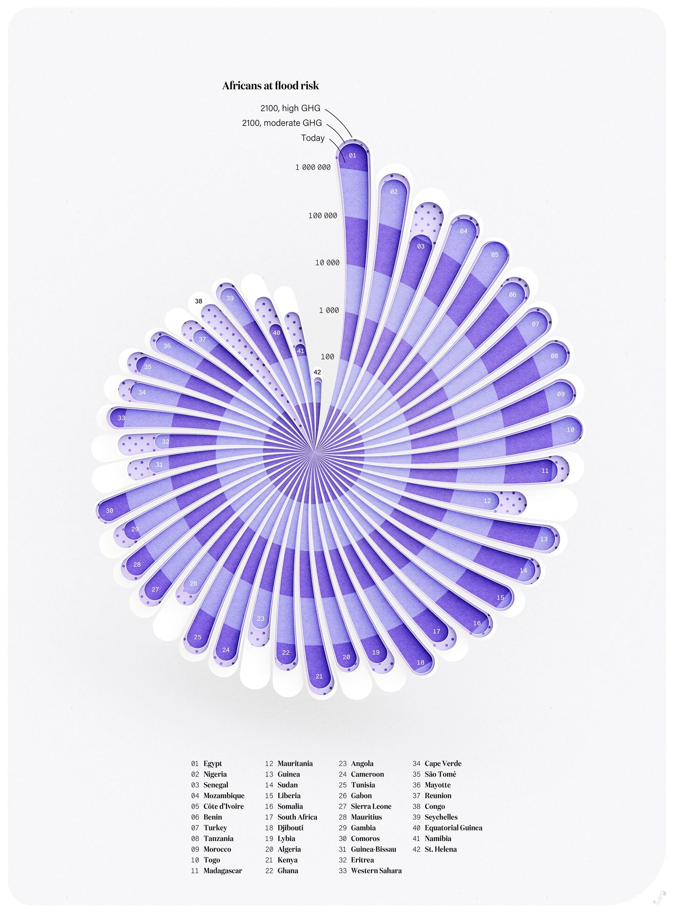

Visualization

Source: Data to Art
Critique
Introduction
As I’m sure we’re all aware by now, I’m a more artistic person, so I chose the artistic focus for this lab. I was incredibly intrigued by the “Data as Art” website because I’m one of those people who can miraculously find meaning in a shade of blue painted on a canvas. The one that caught my eye the most was the shell-like image that represents the populations that are affected by floodwaters in specific regions. This is not a topic that I am particularly passionate about, rather I was drawn to the visualization of the shell and that relation to water and what it means for the data that is being represented.
Overall Concern
I think overall this is a very interesting and compelling piece of information that is being represented fairly well through the spiral pattern. However, the individual points of the data do not appear to be very well represented, and the color palette of the shell does not seem to communicate the urgency of the issue very clearly. The added beauty of the image is certainly gained through the artistic interpretation, but there is not a clear legend at the bottom or the like of what the individual patterns mean that are within the branches of the shell, which is something that I might like to see. This deliberately aesthetic representation of data which could mean life or death for those involved is striking, but I don’t think that the average person would spend the appropriate amount of time working with the image in order to figure out exactly what they’re looking at.
Color Theory and Legend/Key
Part of this comes from the color choices. Purple historically points toward royalty, security, and leadership, none of the above are represented or even discussed in the data. In fact, there is the argument to be made that the opposite is true for the individuals who could be impacted by the floodwaters, but that is not the purpose of this critique. Additionally, there are several differently colored bands throughout the shell, but as the individual spines get smaller, there seems to be no difference in the type of data that they represent. Since there seems to be no meaning, I have to question exactly what their purpose was in differentiating between the different bands. As mentioned previously, there is only a very vague legend or key to explain what exactly the audience is looking at, they have to hunt through the project page in order to find those answers. That seems like it was not well-thought out by the designer, or simply not considered, in terms of ease of access and understanding for the overall work of art. It seems to be a complete chart of data, but there does not seem to be an overt explanation to what exactly that data entails, as is present in other adaptations and interpretations of data into art that are available on the website.
Conclusion
Overall, it’s a pretty picture that when looked at on a surface level seems to check all of the boxes. There’s a vague explanation, small titles, but the main focus is on the spiral of the shell and how that impact can seemingly be never-ending if no efforts are made. The main hinderance in understanding that I have is with what exactly the audience is supposed to come away with thinking or feeling. There’s no call-to-action or push for involvement or urgency- it actually feels incredibly calm and tranquil. I think this is a mildly effective representation of the data, but it could be represented artistically in a better way.